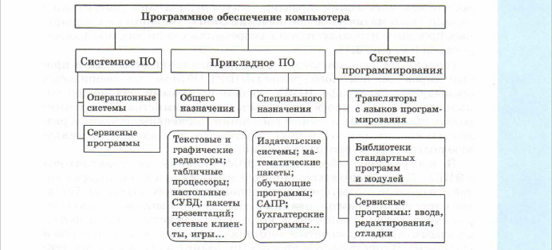

Основные темы параграфа:
=Структура программного обеспечения
=история систем программирования
Вы уже хорошо знаете, что возможности современных информационных технологий определяются не только техническими характеристиками компьютеров, но и составом их программного обеспечения (ПО).
Структура программного обеспечения
Структура программного обеспечения
Структура ПО современных персональных компьютеров схематитически изображена на рис.3.1.
Именно благодаря такому разнообразию программных средств персональный компьютер оказывается полезным и школьнику, и учёному, и домохозяйке. Представление об ИКТ - информационно-коммуникационных технологиях - связано с широким распространением всего этого множества программных продуктов.
История систем программирования Первые ЭВМ были доступны исключительно программистам. По
этому исторически первым типом ПО стали системы программиро
вания.
На машинах первого поколения языков программирования (в со
временном понимании) не существовало. Программисты работали на
языке машинных кодов, что было весьма сложно. ЭВМ первого и вто
рого поколений были приспособлены, прежде всего, для выполнения
математических расчетов. А в таких расчетах часто приходится вы
числять математические функции: квадратные корни, синусы, лога
рифмы и пр. Для вычисления этих функций программисты создавали
стандартные программы, к которым производили обращения из своих
расчетных программ. Стандартные программы хранились все вместе
на внешнем носителе (тогда это преимущественно были магнитные
ленты). Такое хранилище называлось библиотекой стандартных про
грамм. Библиотеки стандартных программ (БСП) — первый вид про
траммного обеспечения ЭВМ.
Затем в БСП стали включать стандартные программы решения ти
повых математических задач: вычисления корней уравнений, реше
ния систем линейных уравнений и пр. Поскольку все эти программы
носили математический характер, то в тот период чаще употреблялся
термин «математическое обеспечение ЭВМ». Библиотеки стандарт
ных программ используются и в современных системах программи
рования (см. рис. 3.1).
В эпоху второго поколения ЭВМ распространяются языки про
граммирования высокого уровня (ЯПВУ). Об этом уже говорилось в
предыдущем параграфе. ЯПВУ сделали программирование доступ
ным не только для профессиональных программистов. Программи
ровать стали многие научные работники, инженеры, студенты раз
личных специальностей и даже школьники, проходящие специаль
ную подготовку по программированию.
В программное обеспечение ЭВМ включаются трансляторы c ЯПВУ. Подробнее о языках программирования и трансляторах чи
тайте в разделе 2.3 материала для дополнительного обучения. Поня
тие системы программирования в современном виде возникло в пе
риод третьего поколения ЭВМ, когда программисты для разработки
программ стали пользоваться терминальным вводом (клавиатурой и
дисплеем). В состав систем программирования были включены текстовые редакторы для ввода и редактирования программы и отлад
чики, позволяющие программисту исправлять ошибки в программе История системного ПО Операционные системы (ОС). Первые версии ОС появились еще
на ЭВМ второго поколения, но массовое распространение операцион-
ные системы получают, начиная с машин третьего поколения.
Основная проблема, которую решали разработчики ОС, — повы
шение эффективности работы компьютера. На первых ЭВМ процес
сор — основное вычислительное устройство — нередко больше про
стаивал, чем работал во время выполнения программы. Такое проис
ходило, если выполняемая программа часто обращалась к внешним
устройствам: ввода, вывода, внешней памяти. Дело в том, что эти
устройства работают в тысячи раз медленнее процессора.
Операционная система позволяет реализовать многопрограммный
режим работы компьютера, при котором в состоянии выполнения на
ходятся одновременно несколько программ. Когда одна программа.
обращается к внешнему устройству, процессор прерывает работу
ней (внешнее устройство продолжает работу без участия процессора)
и переходит к обработке другой программы. Затем процессор может
прервать работу со второй программой и продолжить выполнение
первой. Таким образом, несколько программ «выстраивается в оче
редь» к процессору, а ОС управляет обслуживанием этой очереди.
Точно так же ОС управляет обслуживанием очереди к внешним
устройствам, например к принтеру. Управляют ОС и очередью к сре
детвам ПО: трансляторам, библиотекам, прокладным программам и
пр. Управление ресурсами ЭВМ — это первая функция операцион
ных систем.
С появлением систем коллективного пользования ЭВМ операцион
ные системы стали поддерживать многопользовательский режим работы
ты. В таких системах с одной ЭВМ одновременно работают множество
людей через терминальные устройства: клавиатуру и дисплей. ОС обес
печивает режим диалога с пользователями — интерактивный ре
жим общения. При этом у каждого пользователя (программиста) созда
ется впечатление, что он работает с компьютером один на один.
Еще одной важной функцией ОС стала организация работы с фай
лами. На ЭВМ третьего поколения появились магнитные диски, на
которых информация хранится в файловой форме. Файловая систе
ма — это компонент ОС, работающий с файлами.
Операционные системы современных ПК также
выполняют все Сервисные программы. Этот тип ПО возник и начал развиваться
в эпоху персональных компьютеров. Сюда входят разнообразные
утилиты, антивирусные программы, программы-архиваторы.
Утилита — это небольшая программа, выполняющая действия,
направленные на улучшение работы компьютера. Например, про
грамма восстановления ошибочно удаленных файлов, программа об
служивания жесткого диска: лечения, дефрагментации ит. д.
Компьютерным вирусом является программа, способная внедрять
ся в другие программы. Программы-вирусы выполняют нежелатель
ные и даже опасные для работы компьютера действия: разрушают
файловые структуры, «засоряют» диски и даже выводят из строя
устройства компьютера. Для защиты от вирусов используются
специализированные антивирусные программы (антивирус Каспер
ского АVP, Norton Antivirus и т. д.).
Потребность в программах-архиваторах первоначально возник
ла в 80-90-х годах ХХ века в связи с небольшими информационны
ми объемами устройств внешней памяти — магнитных дисков.
Программа-архиватор (WinRaR, ZipMagic и др.) позволяет сокра
титьобъем файла в несколько раз без потери содержащейся в нем ин
формации. В последнее время большое значение приобрело исполь
зование архивированных файлов в сетевых технологиях: электрон
ной почте, файловых архивах — FTP-службе Интернета. История прикладного ПО
Именно благодаря этому типу ПО персональные компьютеры по
лучили широкое распространение в большинстве областей деятель
ности человека: медицине, экономике, образовании, делопроизвод
стве, торговле и даже в быту.
Самым массовым спросом среди прикладных программ поль
зуются, конечно, текстовые редакторы и текстовые процессоры (на
пример, Microsoft Word). Ушли в прошлое пишущие машинки. Пер
сональный компьютер, оснащенный текстовым редактором, и прин
тер стали основными инструментами для создания любых текстовых
документов.
В 1979 году был создан первый табличный процессор — элек
тронная таблица VisiCalc, ставшая самой популярной программой
в среде предпринимателей, менеджеров и бухгалтеров. Идея
электронной таблицы принадлежала Дэниелу Бриклину — студенту
Гарвардской школы бизнеса. Начиная с 80-х годов прошлого века.
табличные процессоры входят в число лидирующих категорий про
граммного обеспечения.
В конце 70-х — начале 80-х годов ХХ века появились первые ком
мерческие системы управления базами данных (СУБД) — програм
мное обеспечение, которое позволяет пользователям создавать и об-
служивать компьютерную базу данных, атакже управлять доступом
к ней. В зависимости от области применения различают:
=настольные СУБД (Access, FoxPro, Paradox ит. д.),
предназначенные для работы с небольшими базами данных,
хранящимися на локальных дисках ПК или в небольших
локальных сетях; В настоящее время все чаще приходится обрабатывать информа
цию (видео, звук, анимацию), которую невозможно хранить в тради
ционных базах данных. Jasmine является первой в мире СУБД, ори
ентированной на разработку баз данных, хранящих мультимедий
ную информацию.
Электронный офис — в последнее время часто используемое по
нятие. Обычно под этим понимают такой метод ведения делопроиз
водства, при котором всю циркулирующую информацию обрабаты
вают электронным способом с помощью определенных технических
средств и программного обеспечения. Таким программным обеспе
чением являются интегрированные пакеты, включающие набор
приложений, каждое из которых ориентировано на выполнение
определенных функций, создание документов определенного типа
(текстовых документов, электронных таблиц и т. д.). В процессе ра
боты может происходить обмен информацией между документами,
могут создаваться составные документы, включающие в себя объек
ты разных типов (текст, рисунки, электронные таблицы).
Широко используемым сегодня интегрированным пакетом явля
ется офисная система Microsoft Office, базовыми компонентами ко
торой принято считать текстовый редактор Microsoft Word и таб
личный процессор Microsoft Excel. В состав пакета также включены
СУБД Microsoft Access, система подготовки презентаций Microsoft
PowerPoint и некоторые другие программы. Все большей популяр
ностью в учебных заведениях пользуются программы, входящие
в свободно распространяемый пакет OpenOffice.org. Важным его
достоинством является отсутствие лицензионной платы за использо
вание. Пакет включает в себя текстовый процессор Writer, таблич
ный процессор Calc, систему подготовки презентаций Impress, СУБД
реляционного типа Base. Существуют версии OpenOffice.org, рабо
тающие в средах ОС Windows и ОС Linux.
В 90-е годы ХХ века появляется термин мультимедиа: в дополне
ние к традиционным тексту и графике появилась возможность рабо
тать с такими видами информации, как видео и звук. Для хранения
мультимедиафайлов требуются большие объемы внешней памяти
ПК, для обработки — большие процессорные мощности. Создание
объемного реалистического изображения обеспечивается современ
ными видеокартами, обработка звука — звуковой картой. Появля
ются программы редактирования и монтажа звука и видео, предназ
наченные для профессионалов в области музыки и видео. Наряду
этим создаются программы-проигрыватели мультимедиа файлов
(Windows Media Player, Real Media Player и др.), ориентированные
на широкий круг пользователей.
В 1991 годусотрудник Женевской лаборатории практической фи
зики Тим Бернерс-Ли разрабатывает систему гипертекстовых стра:
ниц Интернета, получившую название World Wide Web (WWW)
Всемирная паутина. Создание собственной Web-страницы и опубли
кование ее в сети под силу многим пользователям благодаря специ
альным программам-конструкторам Web-страниц. Наиболее попу
лярными сегодня являются Microsoft FrontPage, входящий в состав
пакета Microsoft Office, и Macromedia DreamWeaver. Этими про
траммами пользуются не только любители, но и профессионалы
Web-дизайна. В ОС Linux популярна программа OpenOffice.org
Write/Web.
Прикладное ПО специального назначения. Данный тип про
граммного обеспечения служит информатизации различных про
фессиональных областей деятельности людей. Трудно дать исчер
пывающий обзор для этой области. Сейчас практически в любой
профессии, связанной с обработкой информации, существует свое
специализированное ПО, свои средства информационных техно
логий.
В последнее время в употребление вошел термин информацион
но-коммуникационные технологии — ИКТ. Рассмотрим лишь неко
торые примеры профессионального использования ИКТ.
Технологии подготовки документов. Любая деловая сфера связана
с подготовкой различной документации: отчетной, научной, справоч
ной, сопроводительной, финансовой и т. д. Сегодня подготовка до
мента любой сложности немыслима без применения компьютера. Для подготовки текстовых документов используются текстовые
процессоры, которые прошли путь развития от простейших редак
торов, не дающих возможность даже форматировать текст, до тек
стовых процессоров, позволяющих создавать документы, включа
ющие в себя не только текст, но и таблицы, рисунки. Информаци
онные технологии, связанные с созданием текстовых документов,
широко используются в полиграфической промышленности. Там
получили распространение издательские системы (например,
Page Maker), позволяющие создавать макеты печатных изданий
(газет, журналов, книг).
Большую роль в автоматизации подготовки финансовых доку
ментов сыграли электронные таблицы. С электронными таблицами
работают программы — табличные процессоры. Пример такой про
траммы — Microsoft Excel.
В настоящее время в финансовой сфере все больше используются
бухгалтерские системы (1С-бухгалтерия и др.). Их широкое приме
нение объясняется тем, что с помощью такой системы можно не
только произвести финансовые расчеты, но и получить бумажные и
электронные копии таких документов, как финансовый отчет, рас
чет заработной платы и пр. Электронные копии могут быть отправ
лены с помощью сетевых технологий в проверяющую организацию,
например в налоговую инспекцию.
Для подготовки научных документов, содержащих математические
расчеты, используются математические пакеты программ (MathCAD,
Maple и пр.). Современные математические пакеты позволяют созда
вать документы, совмещающие текст с математическими расчетами и
чертежами. С помощью такого документа можно получить результаты
расчетов для разных исходных данных, изменяя их непосредственно в
тексте документа. Большинство математических систем, используе
мых сегодня, было создано еще в середине 80-х годов прошлого столе
тия, т. е. вместе с появлением персональных компьютеров. Новые вер
сии этих систем включают в себя новые возможности, например ис
пользование сетевых технологий: организацию доступа к ресурсам
сети Интернет во время работы в среде математического пакета.
ИКТ в управлении предприятием. Эффективность работы компа
нии (производственной, торговой, финансовой и пр.) зависит от того,
как организованы хранение, сбор, обмен, обработка и защита инфор
мации. Для решения этих проблем уже более двадцати лет назад ста
ли внедряться автоматизированные системы управления (АСУ).
В настоящее время в этой области произошли большие перемены.
Классическая АСУ включает в себя систему сбора информации, базу
данных, систему обработки и анализа информации, систему форми
рования выходной информации. Блок обработки и анализа информа
ции является центральным. Его работа основана на экономико-мате
матической модели предприятия. Он решает задачи прогнозирования
деятельности компании на основе финансово-бухгалтерских расче
тов, реагирования на непредвиденные ситуации, т.е. оказывает по
мощь в принятии управленческих решений.
Как правило, АСУ работают на базе локальной сети предприя
тия, что обеспечивает оперативность и гибкость в принятии решений.
С развитием глобальных сетей появилась коммуникационная техно
логия Intranet, которую называют корпоративной паутиной. Intranet
обеспечивает информационное взаимодействие между отдельными со
трудниками и подразделениями компании, а также ее отдаленными
внешними партнерами. Intranet помогает поддерживать оперативную
связь центрального офиса с коммерческими представительствами ком
пании, которые обычно располагаются далеко друг от друга.
ИКТ в проектной деятельности. Информатизация произвела на
свет еще одну важную технологию — системы автоматизированно
го проектирования (САПР).
Проектирование включает в себя создание эскизов, чертежей, вы
полнение экономических и технических расчетов, работу с докумен
тацией.
Существуют САПРы двух видов: чертежные и специализирован
ные. Чертежные САПРы универсальны и позволяют выполнить
сложные чертежи в любой сфере технического проектирования
(AutoCad). Специализированная САПР, например на проектирова
ние жилых зданий, содержит в базе данных все необходимые сведе
ния о строительных материалах, о стандартных строительных кон
струкциях, фундаментах. Инженер-проектировщик создает черте
жи, производит технико-экономические расчеты с использованием
таких систем. При этом повышается производительность труда кон
структора, качество чертежей и расчетных работ.
Геоинформационные системы. Геоинформационные системы (ГИС
хранят данные, привязанные к географической карте местности (райо
на, города, страны). Например, муниципальная ГИС содержит в свои:
базах данных информацию, необходимую для всех служб, поддержи
вающих жизнедеятельность города: городских властей, энергетиков,
связистов, медицинских служб, милиции, пожарной службы и пр. Вся
эта разнородная информация привязана к карте города. Использова
ние ГИС помогает соответствующим службам оперативно реагировать
на чрезвычайные ситуации: стихийные бедствия, экологические ка
тастрофы, технологические аварии и пр.
ИКТ в образовании. В наше время от уровня образованности лю
дей существенно зависит уровень развития страны, качество жизни
се населения. Требования к качеству образования постоянно растут.
Старые, традиционные методы обучения уже не успевают за этими
требованиями. Возникает очевидное противоречие. Использование
ИКТ в образовании может помочь в разрешении этого противоречия.
Технологии обучения мало изменились за последние 100 лет. Пока.
в основном действует метод коллективного обучения. Не всегда такой
способ обучения дает высокие результаты. Причина заключается
в разном уровне способностей разных учеников. Учителя хорошо по
нимают, что необходим индивидуальный подход в работе с учащими
ся. Решению этой проблемы может помочь использование в процессе
обучения специальных программ (обучающих, контролирующих,
тренажерных и т. д.), входящих в состав электронного учебника.
Обучение — это процесс получения знаний. Традиционный источ
ник знаний — учебник ограничен в своих информационных возмож
ностях. Обучающимся на любой ступени образования всегда требо
вались дополнительные источники информации: библиотеки, му
зеи, архивы и пр. В этом отношении жители крупных городов
находятся в более благоприятных условиях, чем сельские жители.
Здесь можно говорить о существовании информационного неравен
ства. Решить эту проблему поможет широкое использование в обу
чении информационных ресурсов Интернета. В частности, специа
лизированных порталов учебной информации.
Примером такого портала является портал Единой коллекции
цифровых образовательных ресурсов (ЕК ЦОР). Адрес в Интернете:
http://school-collection.edu.ru. Ресурсы этого портала охватывают
цифровые средства обучения по всем предметам во всех классах
средней общеобразовательной школы. Сюда входят иллюстратив
ные материалы к теории, практикумы по решению задач, ЦОРы для
автоматического контроля знаний, виртуальные лаборатории и дру
тие типы учебных программ. Особо отметим назначение виртуаль
ных лабораторий. Это интерактивные программы, позволяющие
воспроизводить на компьютере учебные эксперименты, чаще всего
по естественнонаучным дисциплинам: физике, химии, биологии.
Например, ученик может собрать на экране компьютера электричес
кое устройство (схему) и провести его испытание, используя вирту
альные измерительные приборы: вольтметры, амперметры и др.
Еще одна проблема системы образования связана с неравными
возможностями получения качественного образования из-за геогра
фической отдаленности от образовательных центров. Например, для
жителя Якутии проблематично получить диплом престижного мос
ковского вуза. В решении этой проблемы на помощь приходит новая
форма обучения — дистанционное образование, реализация которо
го стала возможна благодаря развитию компьютерных сетей.
Дистанционное образование приходит на смену старой форме за
очного образования, при которой весь информационный обмен про
исходил в письменном виде через почтовую связь. Сетевое дистанци
онное образование позволяет вести обучение в режиме реального
времени. Обучаемые могут не только читать учебный материал,
но и видеть и слышать лекции крупных ученых, сдавать экзамены в
прямом контакте с экзаменатором. Коротко о главном =Программное обеспечение компьютера включает в себя системное
ПО, прикладное ПО и системы программирования. =Исторически первым видом ПО стали системы программирования. =Ядро системного ПО — операционные системы, зародились в пе
риод второго поколения ЭВМ, но распространение получили, начи
ная с третьего поколения. =Сервисные программы (утилиты, архиваторы, антивирусные
программы) получили распространение на персональных компью
терах. =Прикладное программное обеспечение общего назначения разви
валось от внедрения отдельных программ (текстовых редакторов,
табличных процессоров, СУБД и пр.) до интегрированных систем
офисных пакетов. =Информационная технология — совокупность массовых способов.
и приемов накопления, передачи и обработки информации с исполь
зованием современных технических и программных средств. =Информационно-коммуникационные технологии (ИКТ) в настоя
зщее время используются в большинстве профессиональных облас
тей, связанных с обработкой информации, в том числе все шире при
меняются в образовании. 1. Какова структура программного обеспечения современного компьютера? 2. Почему первыми пользователями ЭВМ стали программисты? 3. Когда началось распространение операционных систем? С чем это свя
зано? 4. Какие виды программ кроме ОС относятся к системному ПО? 5. Как классифицируется прикладное ПО? Подготовьте сообщение. 6. Перечислите основные виды прикладных программ общего назначения
и назовите информационные задачи, которые решаются сих помощью. 7. Приведите примеры профессионального использования прикладных
программ. 8. Опишите формы использования ИКТ, с которыми вам приходилось
иметь дело в школе. Какой эффект от их использования вы можете от
метить? Подготовьте сообщение.

Познакомимся с историей возникновения и развития програм
много обеспечения ЭВМ. Появление каждого нового типа программ
связано с появлением новых областей приложения компьютеров,
расширением круга пользователей.
история систем программирования
в интерактивном режиме.
история системного ПО
эти функции. Особенностью, отличающей их от первых ОС, являет
ся дружественный графический интерфейс. А в последнее время
поддержка сетевого режима работы как в локальных, так и в гло
бальных сетях.
история прикладного ПО
=СУБД серверного типа (Oracle, SQL Server, Informix и т. д.),
ориентированные на работу с большими базами данных,
расположенными на компьютерах-серверах.
ТЕСТ